Accessories | Test | Tips | Back to Top
Добро пожаловать в мир осенней моды 2024! С наступлением холодных дней
мы все больше стремимся к уюту и комфорту, но это не значит, что стиль
должен уйти на второй план. Осень — идеальное время для экспериментов с
образами, а аксессуары играют в этом одну из главных ролей. Они помогают
выразить индивидуальность, добавить тепла и насыщенности в каждый
комплект, а также создать атмосферу роскоши и изысканности.
Этой осенью ключевые акценты сосредоточены на текстуре и форме:
массивные шарфы, элегантные кожаные перчатки, крупные солнцезащитные
очки и смелые украшения — всё это незаменимые элементы для тех, кто
хочет выглядеть ярко и стильно. Аксессуары способны полностью
преобразить наряд, добавить ему глубины и завершенности.
Кроме того, мы подготовили интерактивный тест, который поможет вам
определить ваш цветотип. Узнайте, какие оттенки вам подходят, и как
сделать выбор аксессуаров в соответствии с вашей природной палитрой. Мы
также поделимся советами по подбору аксессуаров для каждого цветотипа,
чтобы вам было проще создавать стильные образы этой осенью.
Вдохновляйтесь, экспериментируйте и делайте ваш образ уникальным!
Необходимые Аксессуары для Осени 2024
Откройте для себя самые модные аксессуары этой осени. Мы собрали список предметов, которые помогут подчеркнуть вашу индивидуальность и создать стильный образ.
-
Массивные шарфы
Шарфы крупной вязки не только согревают, но и добавляют текстуру и индивидуальность вашему образу. Носите их с нейтральным пальто для сбалансированного вида.
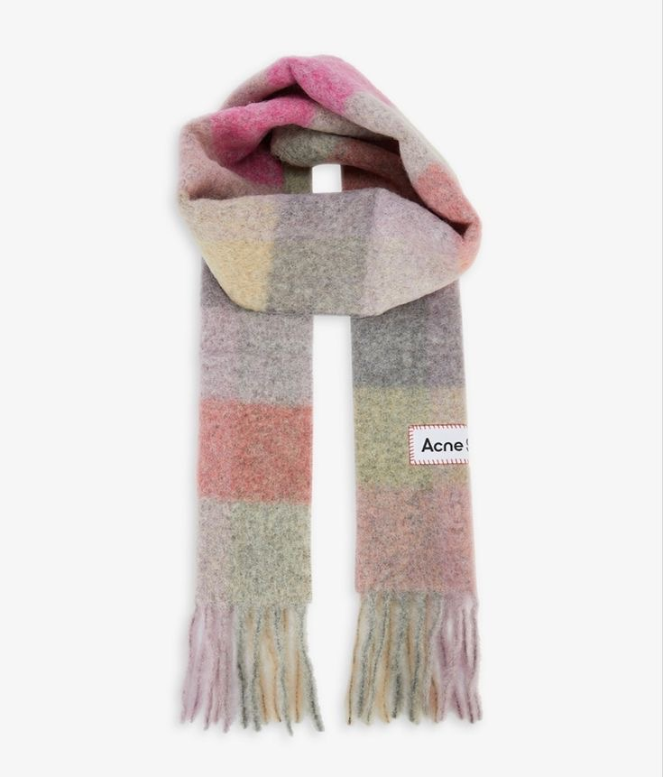 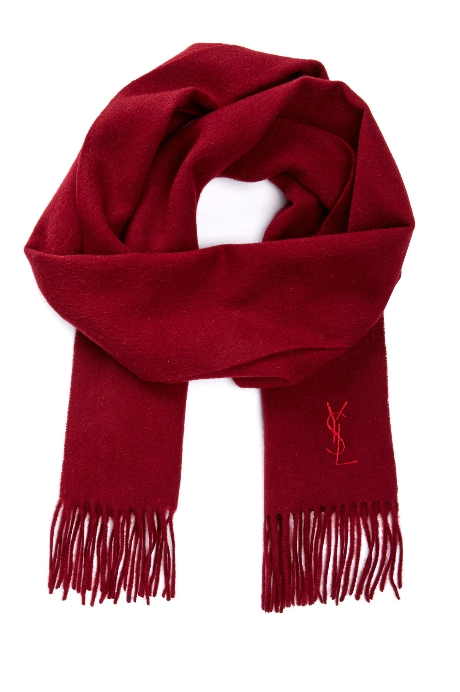 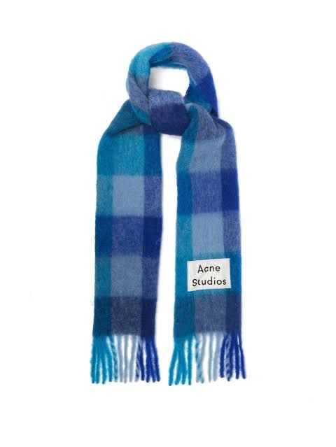 -
Кожаные перчатки
Классические кожаные перчатки — незаменимый аксессуар для холодных дней. Они добавляют элегантности и изысканности в любой наряд.
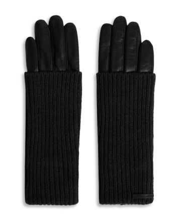 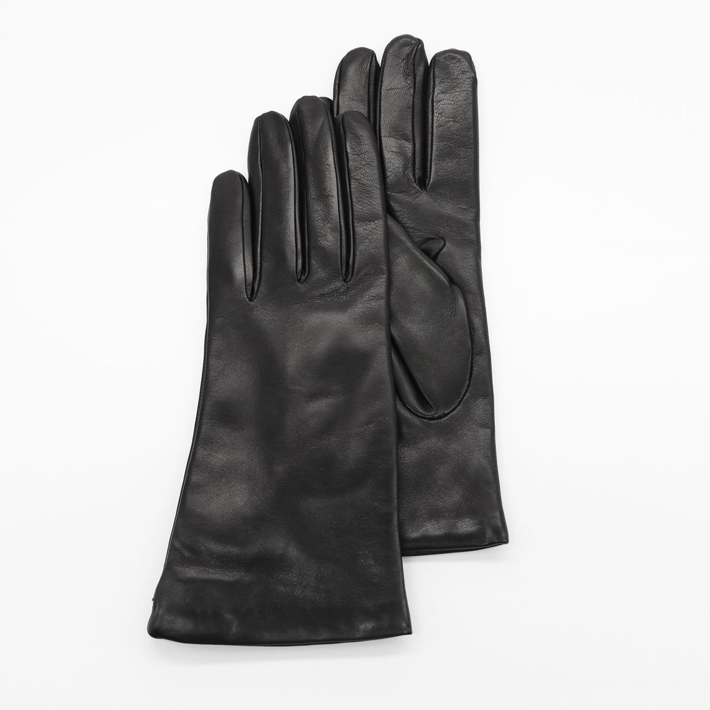 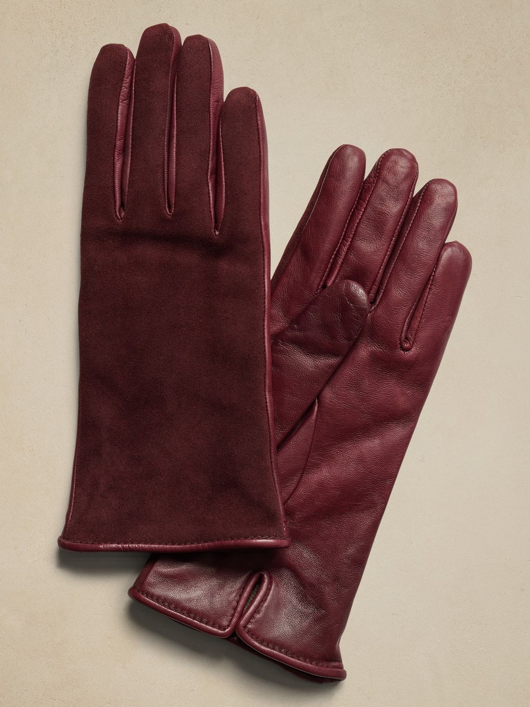 -
Большие солнцезащитные очки
Крупные солнцезащитные очки снова в моде, добавляя смелости любому образу. Идеально подходят для защиты от осеннего солнца.
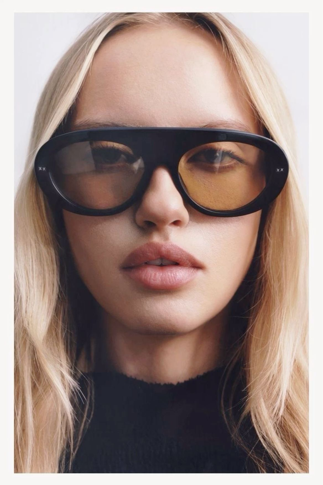 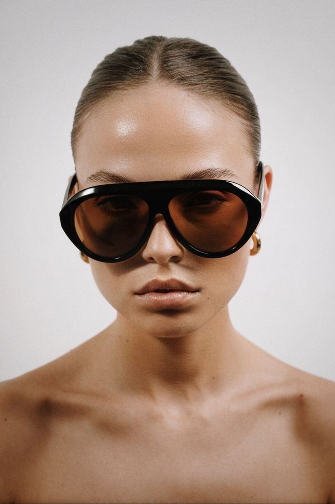 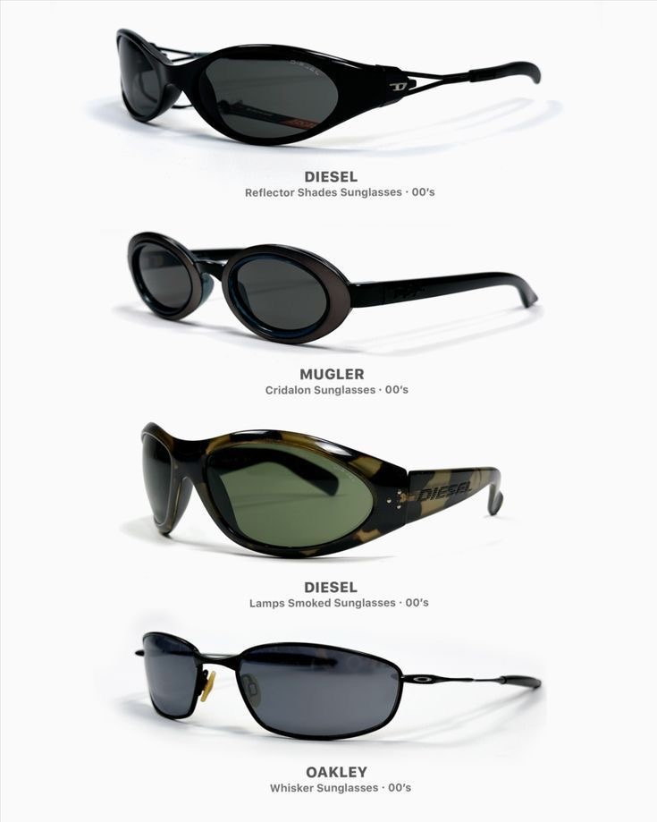 -
Яркие украшения
Акцентные ожерелья и серьги необходимы для добавления цвета и интереса. Попробуйте сочетать яркие украшения с нейтральными тонами для стильного вида.
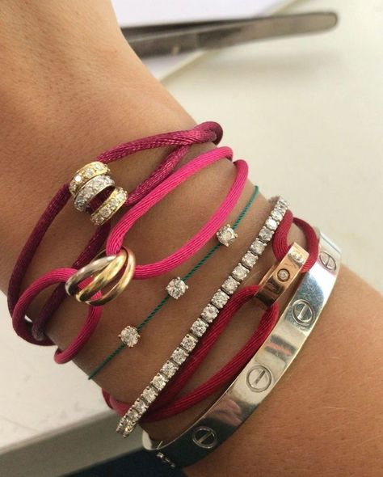 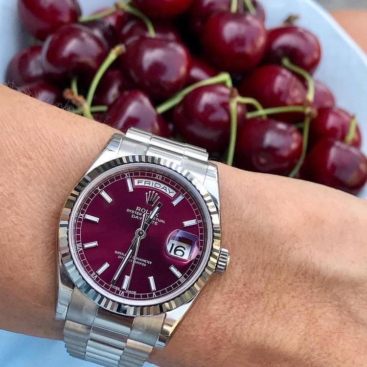 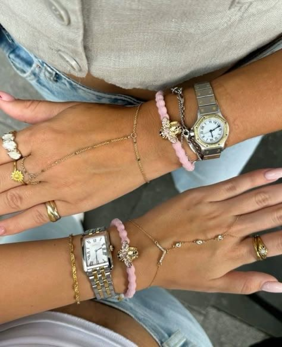
Какой ваш цветотип?
Пройдите тест и узнайте, какие цвета вам подходят для этой осени.
Ваш цветотип: [результат будет здесь]
Советы по выбору аксессуаров по цветотипу
- Осень: Теплые землистые оттенки, такие как коричневый, терракотовый и хаки, подходят идеально. Выбирайте массивные шарфы и кожаные аксессуары в этих цветах.
- Зима: Холодные и контрастные цвета, например, черный, синий и белый, подчеркнут ваш образ. Попробуйте темные очки и минималистичные украшения.
- Весна: Яркие и теплые цвета, такие как персиковый, золотистый и бежевый, подойдут вам лучше всего. Смело выбирайте аксессуары с элементами цвета золота.
- Лето: Пастельные и нежные оттенки, такие как розовый, сиреневый и голубой, подчеркнут вашу индивидуальность. Украшения и шарфы в пастельных тонах подойдут лучше всего.